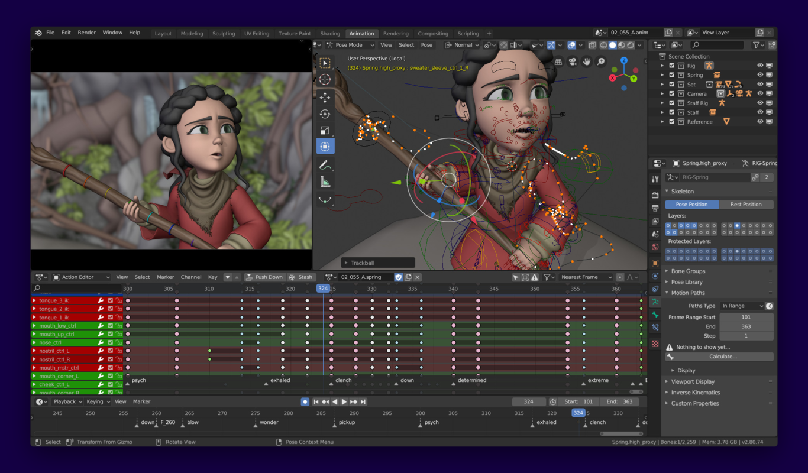
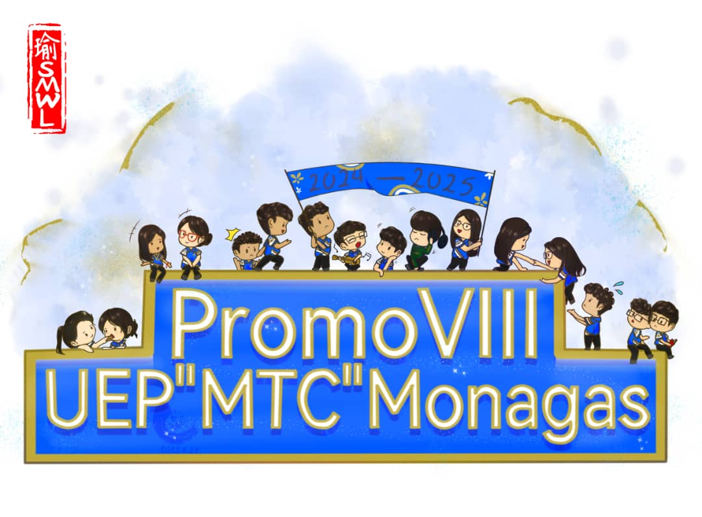
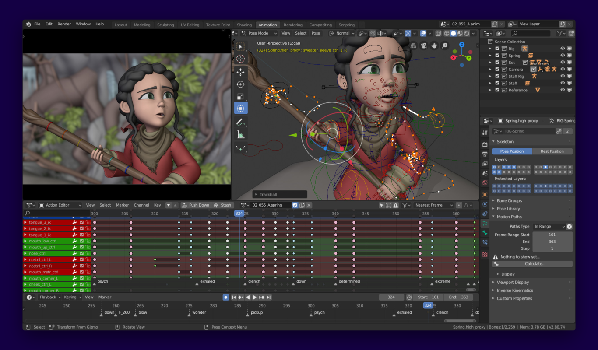
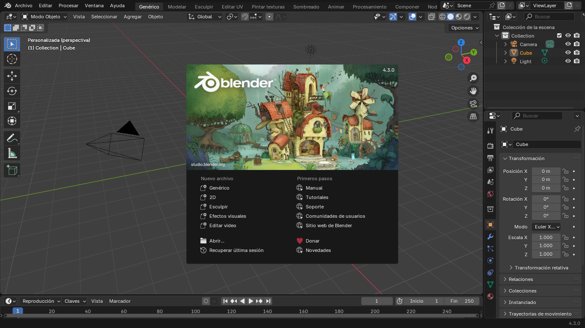

¿Quiénes somos?
Hola
Hola
República Bolivariana de Venezuela
Ministerio del Poder Popular
Maturín, Edo. Monagas
Hola
Hola
Hola

La mañana del jueves, 29 de junio, se celebró en las instalaciones de la institución el conversatorio sobre la serie “Adolescencia”; actividad organizada y ejecutada por los estudiantes partícipes del proyecto socio-comunitario del colegio, el cual procura atender los impactos de las redes sociales en la vida pública, tomando en cuenta la tríada escuela-famili-comunidad como contexto de acción e interacción.
La velada académica convocó a la comunidad intra y extra-escolar para abordar el tema contenido en la teleserie de la plataforma Netflix y los panelistas fueron los mismos estudiantes, quienes tras la formulación de unos análisis críticos y divergentes, compartieron sus impresiones en torno a la producción, haciendo las extrapolaciones con la realidad actual del colegio, la localidad y el panorama mundial.
En dicha actividad, el ambiente académico fue la excusa perfecta para exponer situaciones que representan interés de los jóvenes y adultos, padres y representantes sobre el valor de la convivencia humana de modo presencial, a fin de garantizar que cualquier situación disruptiva que atente contra la paz mental de las personas, debe hablarse en el seno del hogar y el aula para conseguir soluciones entre padres, maestros y compañeros.
En 2025 la Inteligencia Artificial se ha convertido en una herramienta de uso común en nuestras vidas ya sea a nivel empresarial o si eres estudiante pedirle a tu IA favorita que te ayude a hacer alguna tarea. Sin embargo, estas herramientas ahora están siendo usadas para el Bullying digital o Ciber-acoso.

Las herramientas generación de imágenes y videos con inteligencia artificial es una función de la IA bastante divertida y absurda, ya que podemos generar videos de todo tipo aunque cuando estas tecnologías caen en manos de acosadores pueden resultar en un bullying muchísimo mayor que el verbal. El internet puede almacenar información permanente ahí también entra las redes sociales que pueden ser puentes para este acoso. Un ejemplo de la vida real puede ser que una chica de 16 años publique una foto suya a Instagram y un grupo de chicos de su edad agarren esa foto y la usen para humillarla o no solo chicos de su edad sino personas de más edad que pueden usar esa foto para fines más oscuros.